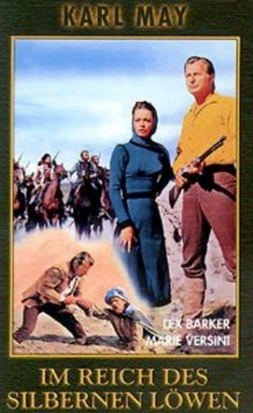

#380 Karl May 13 - Im Reiche des silbernen Löwen
Alternativ: Kingdom of the Silver Lion (Englischer Titel)
 
 IMDB-Wertung: 5.5 / 10
IMDB-Wertung: 5.5 / 10  Metascore: 0
Metascore: 0 
Kara Ben-Nemsi, friends and rescuees set out to free a young relative of the guardian of the treasure of the Chaldaeans 'Christian sect), who is captured for that fabulous ransom. They discover the machradsh of Mossul isn't dead. Indeed he teamed up with local gangster leader Abu Saif, focusing on revenge viz. the gold. The governor even maneuvers to be reinstated and have Kara declared wanted by the padishah. Kara manages to undo all that and save the Chaldaean treasure.
Jahr: 1965
Dauer: 95 Minuten
FSK: 12
Land: Spanien Studio: Nora FilmverleihTonspuren:
Untertitel:
Auflösung: 1080p (1920x816) Größe: 7587 MB
Genre: Abenteuer
Regisseur: Franz Josef Gottlieb
Drehbuch: Karl May, Franz Josef Gottlieb, José Antonio de la Loma, José Antonio de la Loma, J.M. Petersen
Soundtrack: Mordechei Olari-Nozyk, Raimund Rosenberger, Gerard Muller
Darsteller:
Datei: X:\Person\Karl May\Karl May 13 - Im Reiche des silbernen Löwen (1965, FSK12, 1920x816).mkv seit 20.02.2015
Festplatte: HD Collection-7+mehr(A-Z)+Person
 Es gibt insgesamt 20 Filme in der Gruppe 'Person\Karl May'
Es gibt insgesamt 20 Filme in der Gruppe 'Person\Karl May'